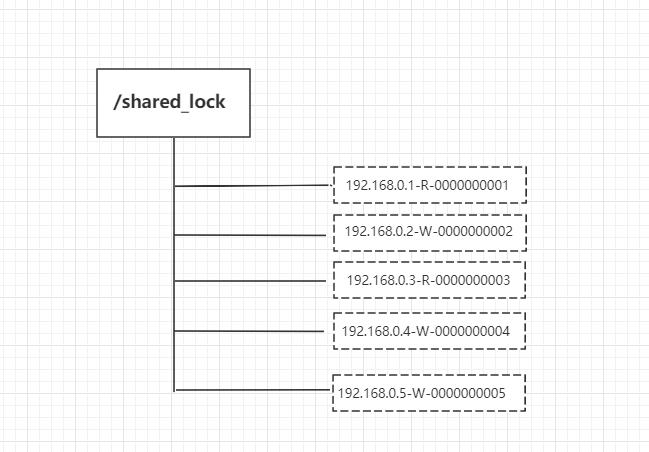

分散ロックは、分散システム間で共有リソースへのアクセスを同期制御するための方法の1つです。
以下では、zookeeper が分散ロックをどのように実装するかを紹介し、排他ロックと共有ロックの2種類の分散ロックについて説明します。
排他ロック
排他ロック（Exclusive Locks）は、書き込みロックまたは独占ロックとも呼ばれます。トランザクションT1がデータオブジェクトO1に排他ロックを追加すると、ロック期間中はトランザクションT1のみがO1に対して読み取りおよび更新操作を実行でき、他のどのトランザクションも読み取りまたは書き込みを行うことはできません。
ロックの定義：
/exclusive_lock/lock
実装方法：
zookeeper の兄弟ノードの一意性を利用し、排他ロックを取得する必要がある場合、すべてのクライアントは create() インターフェースを呼び出して、/exclusive_lockノード配下に一時子ノードを作成し/exclusive_lock/lock、最終的に1つのクライアントだけが作成に成功し、そのクライアントが分散ロックを取得します。同時に、ロックを取得できなかったすべてのクライアントは、/exclusive_lockノード上に子ノード変更の watcher 監視イベントを登録して、ロックの再取得を試みます。
共有ロック
共有ロック（Shared Locks）は、読み取りロックとも呼ばれます。トランザクションT1がデータオブジェクトO1に共有ロックをかけると、そのトランザクションはO1に対して読み取り操作しか行えず、他のトランザクションもこのデータオブジェクトに共有ロックをかけることしかできません。そのデータオブジェクト上のすべての共有ロックが解放されるまでです。
ロックの定義:
/shared_lock/[hostname]-请求类型W/R-序号
実装方法：
1. クライアントは create メソッドを呼び出して、定義ロック方式と同様の一時順序ノードを作成します。

2. クライアントは getChildren インターフェースを呼び出して、作成済みのすべての子ノードリストを取得します。
3. ロックを取得できたかどうかを判断します。読み取りリクエストの場合、自分より小さいすべての子ノードが読み取りリクエストであるか、自分よりシーケンス番号が小さい子ノードが存在しない場合は、共有ロックの取得に成功したことを示し、同時に読み取りロジックの実行を開始します。書き込みリクエストの場合、自分が最小のシーケンス番号の子ノードでなければ、待機状態に入ります。
4. 共有ロックを取得できなかった場合、読み取りリクエストは自分よりシーケンス番号が小さい最後の書き込みリクエストノードに watcher 監視を登録し、書き込みリクエストは自分よりシーケンス番号が小さい最後のノードに watcher 監視を登録します。
実際の開発では、curator ツールキットにカプセル化された API を使用して分散ロックを実装できます。
curator のいくつかのロック方式：
- 1、InterProcessMutex：分散リエントラント排他ロック
- 2、InterProcessSemaphoreMutex：分散排他ロック
- 3、InterProcessReadWriteLock：分散読み書きロック
次の例では、50 個のスレッドがリエントラント排他ロック InterProcessMutex を使用して同時にロックを競い合います：
サンプル
public static void main(String[] args) {
CuratorFramework zkClient = getZkClient();
String lockPath = "/lock";
InterProcessMutex lock = new InterProcessMutex(zkClient, lockPath);
//50個のスレッドがロックを競い合う
for (int i = 0; i < 50; i++) {
new Thread(new TestThread(i, lock)).start();
}
}
static class TestThread implements Runnable {
private Integer threadFlag;
private InterProcessMutex lock;
public TestThread(Integer threadFlag, InterProcessMutex lock) {
this.threadFlag = threadFlag;
this.lock = lock;
}
@Override
public void run() {
try {
lock.acquire();
System.out.println("第"+threadFlag+"番目のスレッドがロックを取得しました");
//1秒待ってからロックを解放する
Thread.sleep(1000);
} catch (Exception e) {
e.printStackTrace();
}finally {
try {
lock.release();
} catch (Exception e) {
e.printStackTrace();
}
}
}
}
private static CuratorFramework getZkClient() {
String zkServerAddress = "192.168.3.39:2181";
ExponentialBackoffRetry retryPolicy = new ExponentialBackoffRetry(1000, 3, 5000);
CuratorFramework zkClient = CuratorFrameworkFactory.builder()
.connectString(zkServerAddress)
.sessionTimeoutMs(5000)
.connectionTimeoutMs(5000)
.retryPolicy(retryPolicy)
.build();
zkClient.start();
return zkClient;
}
}
コンソールには1秒間隔で1つのレコードが出力されます：